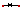
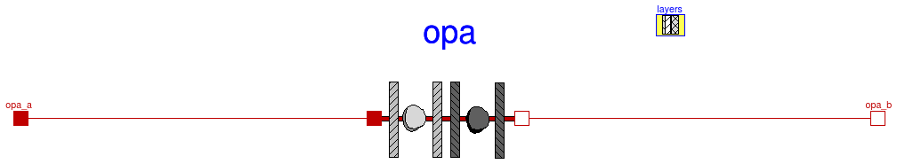

Package with base classes for Buildings.Rooms.Constructions
Information
This package contains base classes that are used to construct the models in
Buildings.Rooms.Constructions.
Extends from Modelica.Icons.BasesPackage (Icon for packages containing base classes).
Package Content
| Name |
Description |
|  PartialConstruction
|
Partial model for exterior construction that has no window |
Partial model for exterior construction that has no window

Information
This is the base class that is used to model opaque constructions in the room model.
The surface azimuth is defined in
Buildings.Types.Azimuth
and the surface tilt is defined in
Buildings.Types.Tilt
Parameters
| Type | Name | Default | Description |
|---|
| Area | A | | Heat transfer area [m2] |
| Angle | til | | Surface tilt [rad] |
| Opaque construction |
| Area | AOpa | | Heat transfer area of opaque construction [m2] |
| Generic | layers | | Material properties of opaque construction |
| Initialization |
| Boolean | steadyStateInitial | false | =true initializes dT(0)/dt=0, false initializes T(0) at fixed temperature using T_a_start and T_b_start |
| Temperature | T_a_start | 293.15 | Initial temperature at port_a, used if steadyStateInitial = false [K] |
| Temperature | T_b_start | 293.15 | Initial temperature at port_b, used if steadyStateInitial = false [K] |
Connectors
| Type | Name | Description |
|---|
| HeatPort_a | opa_a | Heat port at surface a of opaque construction |
| HeatPort_b | opa_b | Heat port at surface b of opaque construction |
Modelica definition
partial model PartialConstruction
"Partial model for exterior construction that has no window"
parameter Modelica.SIunits.Area A
"Heat transfer area";
parameter Modelica.SIunits.Area AOpa
"Heat transfer area of opaque construction";
parameter Buildings.HeatTransfer.Data.OpaqueConstructions.Generic
layers
"Material properties of opaque construction";
parameter Modelica.SIunits.Angle til
"Surface tilt";
final parameter Boolean isFloor=til > 2.74889125
and til < 3.53428875
"Flag, true if construction is a floor";
final parameter Boolean isCeiling=til > -0.392699
and til < 0.392699
"Flag, true if construction is a floor";
Modelica.Thermal.HeatTransfer.Interfaces.HeatPort_a opa_a
"Heat port at surface a of opaque construction";
Modelica.Thermal.HeatTransfer.Interfaces.HeatPort_b opa_b
"Heat port at surface b of opaque construction";
final parameter Integer nLay(min=1, fixed=true) =
size(layers.material, 1)
"Number of layers";
final parameter Integer nSta[nLay](
each min=1)=
{layers.material[i].nSta
for i
in 1:nLay}
"Number of states";
parameter Boolean steadyStateInitial=false
"=true initializes dT(0)/dt=0, false initializes T(0) at fixed temperature using T_a_start and T_b_start";
parameter Modelica.SIunits.Temperature T_a_start=293.15
"Initial temperature at port_a, used if steadyStateInitial = false";
parameter Modelica.SIunits.Temperature T_b_start=293.15
"Initial temperature at port_b, used if steadyStateInitial = false";
HeatTransfer.Conduction.MultiLayer opa(
final A=AOpa,
final layers=layers,
final steadyStateInitial=steadyStateInitial,
final T_a_start=T_a_start,
final T_b_start=T_b_start)
"Model for heat transfer through opaque construction";
equation
connect(opa.port_a, opa_a);
connect(opa.port_b, opa_b);
end PartialConstruction;
Automatically generated Mon Jul 13 14:27:33 2015.